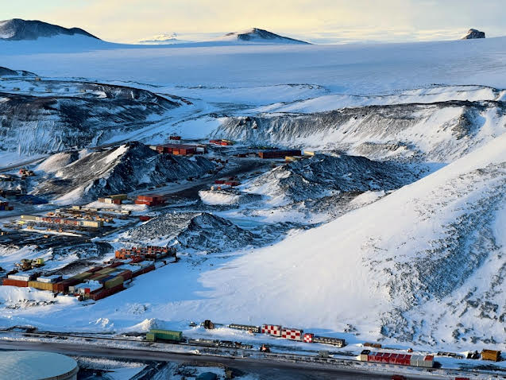
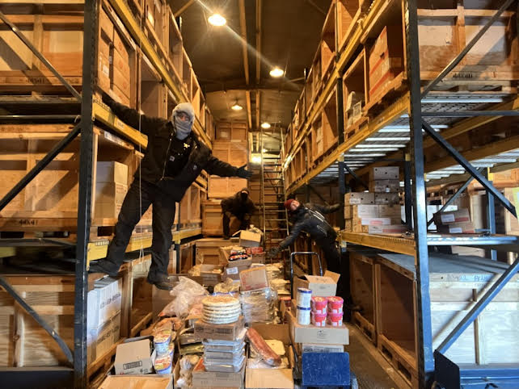
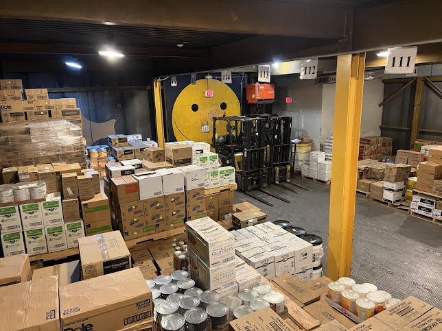
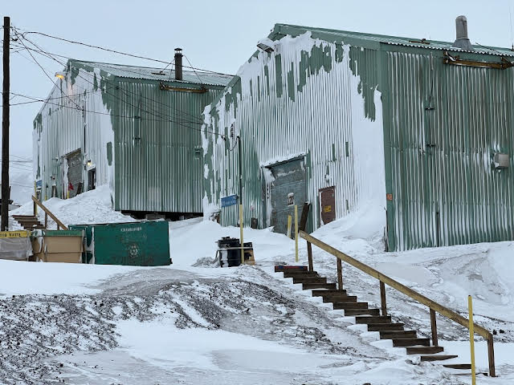
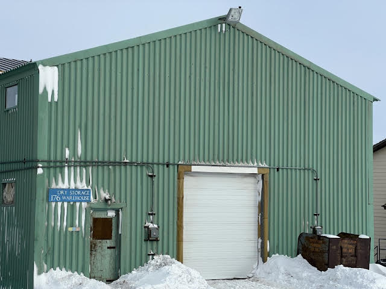
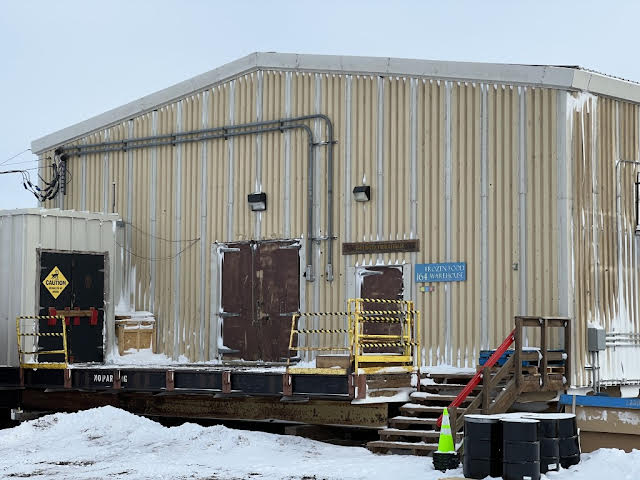
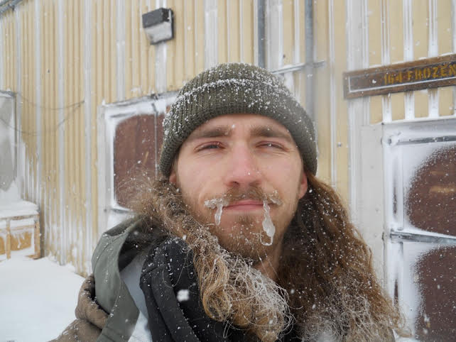
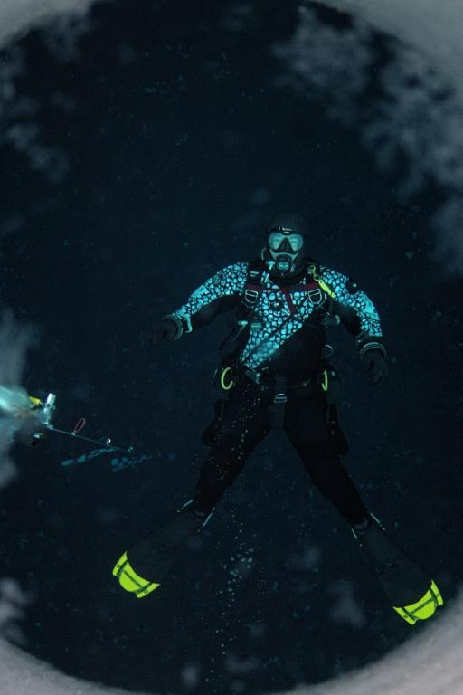
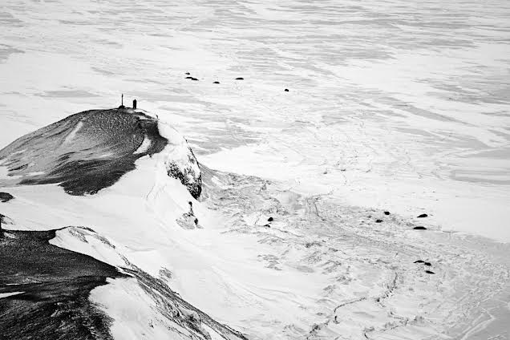
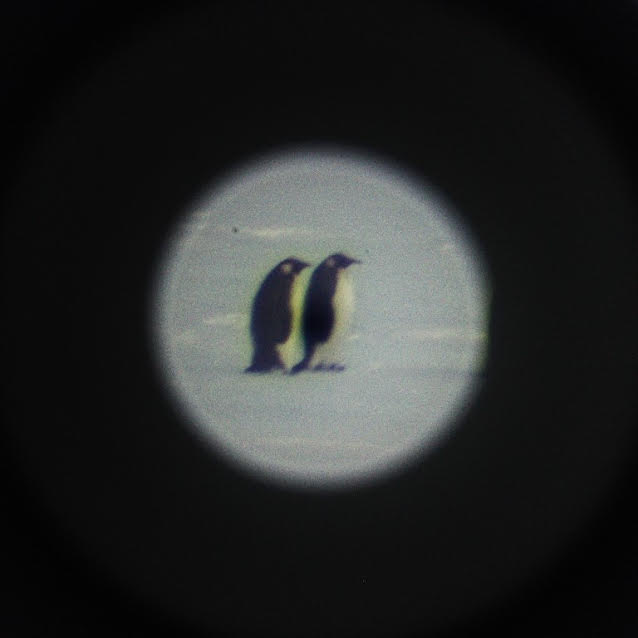

Longren Antarctic Newsletter #10 - 02.01.2026 ------------------------------ Hello friends and family, Happy new year! I hope you all have enjoyed the start of the year so far. I've been in Germany with my sister and her family for the holidays and have appreciated the time with my nephews. Three young boys really are a lovely handful. These past few months, I've had a whirlwind of a time. In August, I deployed to Antarctica for my second time, this time with my partner, Tasha. On the way, we enjoyed a couple weeks of vacation during a delay in Christchurch, New Zealand (due to weather and plane maintenance) before making it down to McMurdo Station, Antarctica.  An outdoor storage area at McMurdo Station. This time around, I obtained work as what they call a Supply Technician. Specifically, I worked in warehouses that store food for the station. From dried and canned goods to frozen food to beverages of all kinds, the team I worked on went around to every warehouse each week to gather what was needed for the galley and the store. We were affectionately called "food monkeys", as we could often be seen climbing around on the crates and boxes of food.  The freezer houses hundreds of crates of food. Depending on the season, that would mean feeding between 100 to 1000+ people. In August, we had a population of about 400 people. For our team of three food monkeys, we were kept busy to keep up with the amount of food and drinks that were consumed by the entire station. By the end of a 6-day week, I could definitely feel the soreness in my muscles from moving thousands of kilograms of food with my own two hands.  The inside of the DNF (Do Not Freeze) warehouse, which houses canned, jarred, and dried goods. However, we didn't have to lug all the food between the buildings with only our hands. I got to use an indoor forklift for the first time, as well as the outdoor forklifts that I had used before. I only had one accident with a forklift in my time as a food monkey, which was a minor incident with a 20kg bag of yogurt powder. Let's just say, I really don't want to poke another.    The DNF and beverage the dry storage warehouse, BL176 (middle), and the frozen food warehouse, BL164 (bottom). You might be wondering why we keep the frozen food in a freezer, rather than outside (it is Antarctica, after all). That's a good question and is exactly what they do at the South Pole! The South Pole has never recorded above-freezing temperatures. However, McMurdo Station is located further north, therefore the summers are warmer. Much of the summer the air temperature is above freezing, which means a food freezer is needed. Actually, the freezer is kept at -30°C (-22°F), which makes for a cold day when the galley needs their smaller freezers to be restocked.  Me with a snotsicle after a few hours of pulling food from the freezer. It wasn't only work while I was there, though! On one of my days off, I got the chance to dive tend on the sea ice. Each year, to facilitate the work of the scientists that study the southern ocean, large holes are drilled through the sea ice and a fishing hut is placed over each hole. When the divers go under the water, they need someone to throw in the ladder after them, watch the hut while they are gone, and then help them out of the water when they return. On my last Sunday at McMurdo, Tasha and I had our weekly brunch, bundled up, and went out onto the ice to watch the divers go to work.  A diver under the ice. The seals arrived at Winter Quarters Bay especially early in the year and in numbers. The emperor penguins showed up too after a particularly nasty storm that dumped a good amount of snow throughout the station. We even had a snow day that halted most work for a day.  Seals scattered across the frozen ocean next to Hut Point, just a stone's throw from the station. In October, I got word that I was able to be rehired at my old job with NOAA. I said farewell to Tasha at McMurdo and moved back to Colorado to pick up where I left off with work in February. Training with NOAA continued in November and in December I traveled once again to American Samoa to support the observatory there. In January, I'll be heading to the South Pole. There, I will spend the next 10 months wintering over to collect air samples and launch balloons. More about that from the bottom of the world. Have a great year, Luke ------------------------------ ------------------------------ Previous newsletters can be found on my website.  |